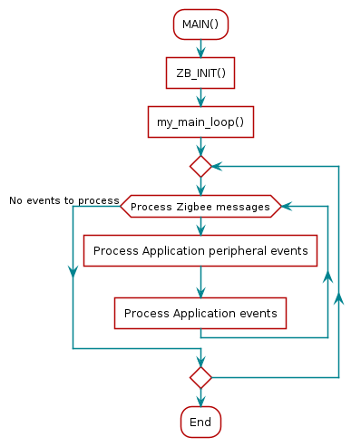

Application Overview¶
Z-Stack example applications are designed to enable faster end-product development by providing different implementations of Zigbee device definitions while conforming to |ZCL8| requirements for certification. This allows the developers to explore the usage of the stack for configuring and running a device in a network along with other essential features, such as nonvolatile (NV) memory storage to save the network parameters and application specific information. The configuration and usage of peripherals such as switches and LEDs are also shown by these sample applications. This chapter explains the application’s implementation to help developers quickly modify the Z-Stack out-of-box example applications for customized development. A full description is proviced in the |ZBOSS_UG|.
Attention
Zigbee stack is not recommended for production.
Application Architecture¶
Figure 45. shows the block diagram of the Light and Switch example applications on the CC13xx and CC26xx.
Example Application Block Diagram¶
High-level descriptions of various blocks in Figure 45. are as follows:
FreeRTOS Start-up Code: Initializes the application (see Start-Up in main() for more details).
Example Application: The platform-independent implementation of the example use case. The Z-Stack out-of-box demonstrates two use cases – Light and Switch. Developers can modify this module’s out-of-box example code for custom for custom application requirements to quickly develop end products.
Utility Functions: Provides various platform utilities which the application can use. Examples include LED, timers, keys, and so on.
Application-Specific Functions: Implements platform-specific functions such as data storage over power cycles (nonvolatile) and provides user interface functions, such as handling button presses.
ZBOSS API Module (API ZBOSS Module): This module provides an interface to the management and data services of the Zigbee stack.
Application Preprocessor Configuration¶
A few preprocessor symbols exist to operate Z-Stack within the project. They are located in the Project Properties as further discussed in the Useful CCS IDE Settings section of the Z-Stack Quick Start Guide.
Note
Please refer to the preprocessor symbols section of the Z-Stack Quick Start Guide to setup compile options for the project if using IAR.
Start-Up in main()¶
The main() function inside of ti_f3_main.c is the application
starting point at runtime. This is where the board is brought up with interrupts
disabled and board-related components are initialized. Tasks in this function
are configured by initializing the necessary parameters, setting their priority,
and initializing the stack size for the application. The primary IEEE address
(programmed by TI) is obtained from the CCFG area of the flash memory
and TI drivers are initialized. In the final step, the FreeRTOS scheduler is
started by calling vTaskStartScheduler(), which does not return. See the
CC13x2 CC26x2 SimpleLink Wireless MCU Technical Reference Manual for information on the start-up sequence before main() is reached.
int main(void)
{
pthread_t thread;
pthread_attr_t attrs;
struct sched_param priParam;
int retc;
int detachState;
/* Call driver init functions */
Board_init();
/* Set priority and stack size attributes */
retc = pthread_attr_init(&attrs);
if (retc != 0)
{
/* pthread_attr_init() failed */
FATAL_ERR();
}
priParam.sched_priority = 1;
detachState = PTHREAD_CREATE_DETACHED;
retc = pthread_attr_setdetachstate(&attrs, detachState);
if (retc != 0)
{
/* pthread_attr_setdetachstate() failed */
FATAL_ERR();
}
retc = pthread_attr_setschedparam(&attrs, &priParam);
if (retc != 0)
{
/* pthread_attr_setschedparam() failed */
FATAL_ERR();
}
retc = pthread_attr_setstacksize(&attrs, THREADSTACKSIZE);
if (retc != 0)
{
/* pthread_attr_setstacksize() failed */
FATAL_ERR();
}
retc = pthread_create(&thread, &attrs, main_task_function, NULL);
if (retc != 0)
{
/* pthread_create() failed */
FATAL_ERR();
}
/* Start the FreeRTOS scheduler */
vTaskStartScheduler(); /* does not return */
return (0);
}
In terms of the IDE workspace, ti_f3_main.c exists in the Application project –
meaning that when compiled it is placed in the allocated section of the application’s flash.
Application Initialization Function¶
FreeRTOS Tasks describes how a task is constructed. After the
task is constructed and the FreeRTOS scheduler is started, the function that
was passed during task construction is run when the task is ready. Specific Z-Stack
functions are called to establish the node processes ans start the device.
MAIN()
{
ARGV_UNUSED;
/* Trace enable */
ZB_SET_TRACE_OFF();
/* Traffic dump enable */
ZB_SET_TRAF_DUMP_OFF();
/* Global ZBOSS initialization */
ZB_INIT("on_off_switch");
#ifdef ZB_COORDINATOR_ROLE
/* Set up defaults for the commissioning */
zb_set_long_address(g_zc_addr);
zb_set_network_coordinator_role(DEFAULT_CHANLIST);
zb_secur_setup_nwk_key(g_nwk_key, 0);
zb_set_max_children(1);
#elif defined ZB_ROUTER_ROLE && !defined ZB_COORDINATOR_ROLE
/* Set up defaults for the commissioning */
zb_set_long_address(g_zr_addr);
zb_set_network_router_role(DEFAULT_CHANLIST);
zb_set_max_children(1);
#elif defined ZB_ED_ROLE
/* Set up defaults for the commissioning */
zb_set_long_address(g_zed_addr);
zb_set_network_ed_role(DEFAULT_CHANLIST);
/* Set end-device configuration parameters */
zb_set_ed_timeout(ED_AGING_TIMEOUT_64MIN);
// zb_set_keepalive_timeout(ZB_MILLISECONDS_TO_BEACON_INTERVAL(3000));
zb_set_rx_on_when_idle(ZB_TRUE);
#endif
zb_set_nvram_erase_at_start(ZB_FALSE);
/* Register device ZCL context */
ZB_AF_REGISTER_DEVICE_CTX(&on_off_switch_ctx);
/* Register cluster commands handler for a specific endpoint */
ZB_AF_SET_ENDPOINT_HANDLER(ZB_SWITCH_ENDPOINT, zcl_specific_cluster_cmd_handler);
/* Initiate the stack start without starting the commissioning */
if (zboss_start_no_autostart() != RET_OK)
{
TRACE_MSG(TRACE_ERROR, "zboss_start failed", (FMT__0));
}
else
{
/* Call the application-specific main loop */
my_main_loop();
}
/* Deinitialize trace */
TRACE_DEINIT();
MAIN_RETURN(0);
}
For application examples, MAIN calls ZB_INIT(),
which later calls zb_init that serves as the entrance for
the application code to configure Z-Stack network parameters as well as
application specific peripherals configurations, callbacks, and stack
notifications.
Event Processing in the Task Function¶
After initializing the peripherals and configuring the application and
implementing the initialization function from the previous code snippet,
MAIN(), it enters an infinite loop my_main_loop so as to
continuously process as an independent task and not run to completion, seen
in fig-switch-task-flow-chart.

Switch Example Application Task Flow Chart¶
fig-switch-task-flow-chart shows various reasons for posting to the
semaphore, causing the task to become active.
Events Signaled Through the Internal Event Variable¶
The zboss_signal_handler function uses definitions to identify what action
caused the process to wake up and take appropriate action. The values correspond
to a defined event such as (not a comprehensive list):
// Application Events
#define ZB_ZDO_SIGNAL_SKIP_STARTUP 1U
#define ZB_ZDO_SIGNAL_DEVICE_ANNCE 2U
#define ZB_ZDO_SIGNAL_LEAVE 3U
#define ZB_ZDO_SIGNAL_ERROR 4U
#define ZB_BDB_SIGNAL_DEVICE_FIRST_START 5U
#define ZB_BDB_SIGNAL_DEVICE_REBOOT 6U
#define ZB_BDB_SIGNAL_STEERING 10U
#define ZB_COMMON_SIGNAL_CAN_SLEEP 13U
#define ZB_ZDO_SIGNAL_PRODUCTION_CONFIG_READY 23U
#define ZB_BDB_SIGNAL_TC_REJOIN_DONE 58U
These allow for action to be taken at the time each event occurs.
Callbacks¶
The application code also likely includes various callbacks from the protocol
stack layer and RTOS modules. These have been registered during the
MAIN or zboss_signal_handler functions. Examples include
finding_binding_cb, zcl_specific_cluster_cmd_handler,
button_press_handler, and permit_joining_cb.
Buttons¶
The basic common user interface controls the funtionality of a push button which is already incorporated into the example applications for use with the LaunchPad boards:
BTN-1: Application-specific function (ex. onoff switch)
More DIOs can be added to fit the requirements of a custom board design and specific application in accordance with SysConfig initialization, for more information refer to Configure The Board Files with SysConfig